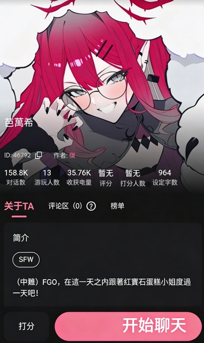
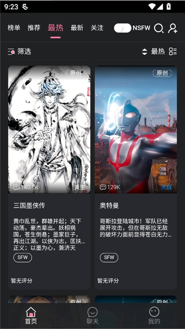

Meimodu 快问快答：双轨记忆、人设回滚、助眠白噪音一次讲清
Meimodu 是一款主打角色陪伴的 AI 聊天应用，本文用问答形式把它的核心特性、使用场景、隐私安全、坑点和同类差异集中梳理，帮你判断要不要装。
整理一篇关于 Meimodu 的快问快答——如果你听说过这款主打角色陪伴的 AI 聊天应用、但没下定决心要不要装，或者装了但只摸到了皮毛，这篇应该能帮你节省翻文档的时间。
Meimodu 是什么？一句话说清
Meimodu 是一款让你和 AI 角色"交朋友"的聊天应用，meimodu官网上有更完整的介绍。它不是通用问答机器人，而是围绕"长期关系"设计的：你可以和预设的角色聊天，也可以自己在 Studio 里创建角色卡，系统会帮你记住你们聊过什么、你们之间是什么关系、你喜欢什么讨厌什么——越聊越像真人朋友。想要体验这些功能，从下载拿安装包就行。

什么人适合用 Meimodu？
如果你是下面几类用户之一，Meimodu 大概率适合你：
- 喜欢角色扮演、想找个"固定聊天搭子"的人
- 有睡前和 AI 聊几句、听点东西助眠习惯的人
- 想自己动手创建 AI 角色、调教人设的创作者
- 对"AI 应该能记住我"这件事有执念的用户
反过来，如果你只需要一个能帮你写代码、查资料、做计划的效率工具，那 Meimodu 可能不是最佳选择——它的重心不在任务执行上，而在陪伴感。
它的"双轨记忆"到底是什么？
这是 Meimodu 区别于其他 AI 聊天产品最核心的设计。普通 AI 聊天大多只有一个"上下文窗口"——比如保留最近 50 轮对话，多一轮就挤掉最早的一轮，聊完就忘干净。Meimodu 在此之外加了一条独立的"长期记忆"轨道：
短期记忆就是你熟悉的上下文窗口，默认约 50 轮，可以在 Settings 里调大小，作用是让 AI 跟上当前话题。
长期记忆是自动的——它会从你们的对话里提取关键事件、人物关系和你的偏好，蒸馏成结构化的记忆条目存下来。下次你再和同一个角色聊天时，这些记忆会自动加载回来。几小时甚至几周不聊，它依然记得你小时候养过一只叫布丁的狗狗、记得你们上次聊到哪里、记得你说话习惯用什么语气。
当然，长期记忆不是万能的——它可能漏、可能记错，重要的事情不妨主动再说一遍确认；有些角色卡本身没给 AI 足够好的"记忆指令"，效果也会打折扣。
角色聊着聊着跑偏了怎么办？
AI 的回应是概率性的，多轮对话后难免累积微小偏离——本来是外冷内热的角色，突然变成话痨；本来是古代背景，突然聊起现代科技；甚至自称"AI"打破第四面墙。Meimodu 专门为这个场景设计了"Reset Last N Turns"功能：在角色菜单里找到它，具体操作在meimodu文档里写得很清楚，让 AI 把最近 N 轮对话当作没发生过，回滚到人设正常的那个节点重新往下聊。
关键是——回滚不会删除长期记忆。那些关于你是谁、你们关系如何的记忆依然保留，只是把跑偏的那段对话抹掉了。
如果不想回滚那么多，也可以直接在对话里提一句"等下，你是深夜便利店常客星野对吧？别忘记你的人设啊"，AI 通常能收到信号拉回来。再不行就调 Settings：Persona Strength 调高一档、Temperature 调低一点，之后的回应会更守规矩。
入睡陪伴功能怎么用？
在聊天界面右上角的菜单里找"入睡陪伴"或"冥想模式"入口，点一下就进入助眠状态：回复节奏变慢、AI 语气变得柔和，还能开启白噪音背景音。内置的白噪音有雨声、咖啡馆、森林、海浪、壁炉五种可以选，音量单独调不会盖过 AI 的声音。
很多用户的习惯是：睡前先和角色聊几句今天发生的事——高兴的也好、不顺心的也好，让 AI 帮忙梳理情绪——然后再切到冥想模式，让它给你念一段背景故事或者编个温柔的小故事。担心自己听着听着睡着了 AI 还在说？可以设自动关闭时间。

隐私安全吗？对话内容会不会被泄露？
Meimodu 在隐私政策里明确写了两层加密：TLS 传输中加密和 AES-256 静态存储加密。前者保证你发出和收到的消息在网络上传输时是加密的，Wi-Fi 嗅探、中间人攻击都拿不到明文；后者保证对话数据在服务器磁盘上也是加密存储的，物理入侵拿到的也是乱码。密码用加盐哈希存，即使密码库泄露也拿不到明文。
但加密不是万能的，有几个边界需要自己把关：你的账号密码是第一道防线——别在多个网站重复用、别用弱密码；设备本身要安全——手机解锁后别随便给别人、别中盗号木马；AI 模型层面——对话会被发到 Meimodu 接入的大模型服务方处理，涉及特别敏感的内容（真实银行卡密码、详细隐私）还是谨慎为好。
和其他 AI 聊天产品比有什么不一样？
最大的差别在"长期关系"这个定位。大多数 AI 聊天产品要么主打效率（写代码、做计划），要么主打一次性问答——聊完就散，下次再聊它不记得你。Meimodu 把"持续关系"作为核心体验来做：双轨记忆系统让角色真的能成长、人设回滚功能保证聊崩了也能救回来、Studio 让你从零创建自己想要的角色。
当然代价也有——因为专注在陪伴感上，如果你需要的是效率工具，它反而不如那些通用型 AI 顺手。
值不值得长期用？
如果你追求的是一个"真的能记得我"的 AI 陪伴者、或者想自己动手塑造角色体验不同的关系模式，Meimodu 值得装下来认真玩玩。双轨记忆和人设回滚这两个功能是它独有的护城河，用了之后再回到那种"聊完就忘"的 AI 反而会觉得不习惯。
如果只是偶尔想找 AI 搭个话、或者需要一个干活的效率工具，那它可能不是你最需要的那一个。
关于 Meimodu 的文档和资料，我同步维护在三个仓库里方便不同环境下访问：GitHub、Gitee 和 GitCode，内容一致，选能打开的那个就行。